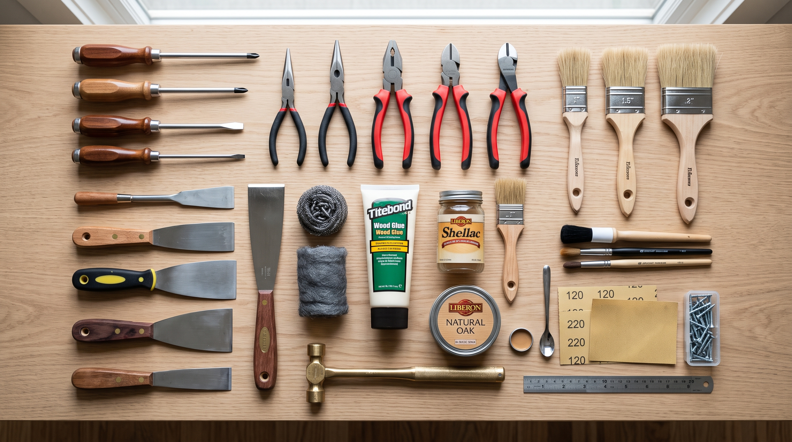
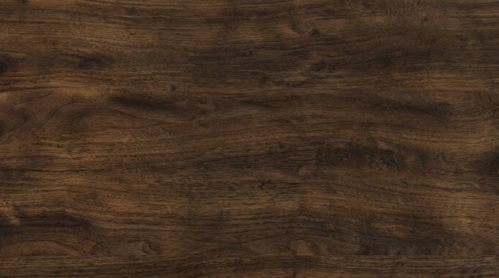
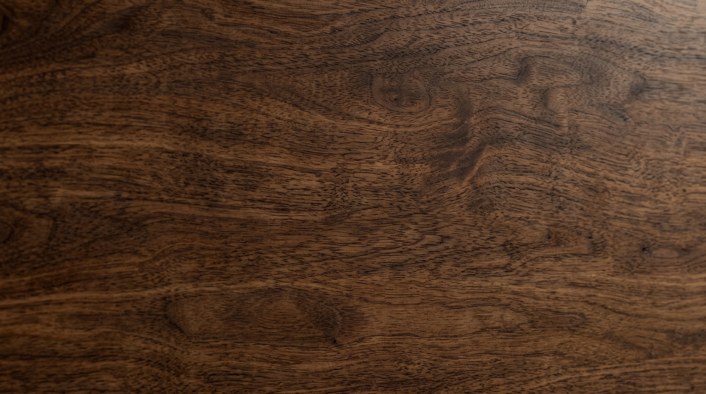

ESPECIFICACIONES TÉCNICAS
HERRAMIENTAS
Algunas de las que vamos a usar
MATERIALES
Algunas de las que vamos a usar
ACABADOS
Algunas de las que vamos a usar

Herramienta
Pinceles finos
Pinzas de corte
Lana de acero
Martillo de latón

Material Material
Material

Material